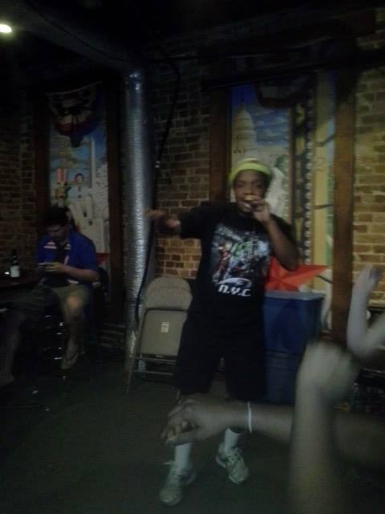
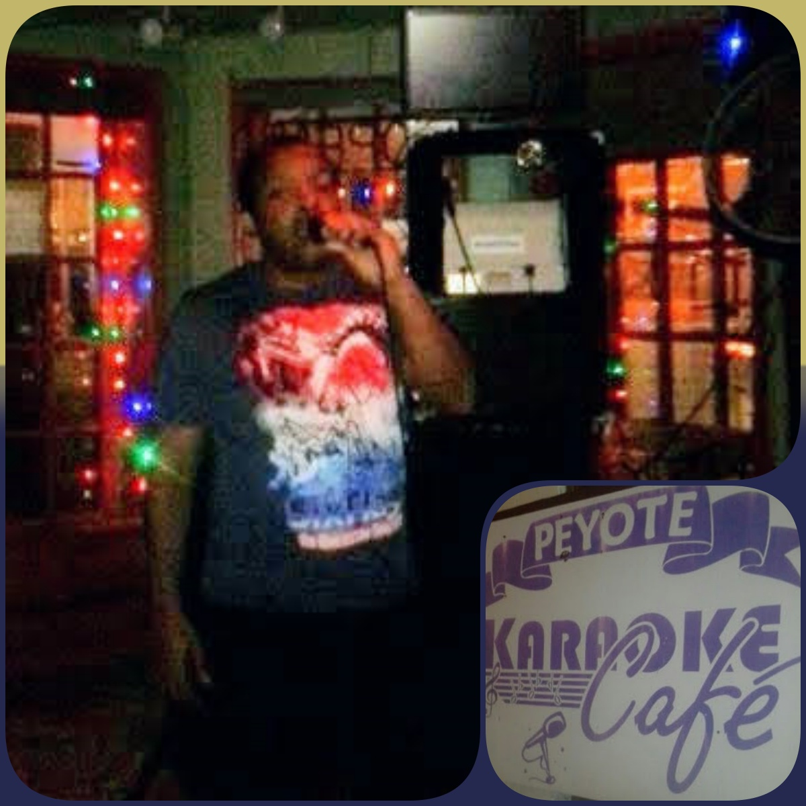

Karaoke in Washington, DC |
||
|  |
|
 |
I was in Washington, DC, for a business trip. During a couple of free evenings, I found two karaoke shows. The one on the left is "Kostume Karaoke". My performance was met with high energy from the crowd, but I only sang once in 90 minutes since you had to tip the KJ to sing more. On the right side is Peyote's Karaoke Bar, which was light on a crowd at the time I performed, but I sang several times. DC: check! |
||